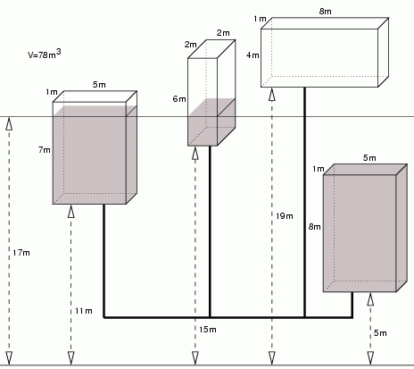

|
|||||||||||||||||
|
Server time: 2006-01-10 05:48:13 |
SPOJ Problem Set110. Fill the CisternsProblem code: CISTFILL
During the next century certain regions on earth will experience severe water shortages. The old town of Uqbar has already started to prepare itself for the worst. Recently they created a network of pipes connecting the cisterns that distribute water in each neighbourhood, making it easier to fill them at once from a single source of water. But in case of water shortage the cisterns above a certain level will be empty since the water will flow to the cisterns below. You have been asked to write a program to compute the level to which cisterns will be filled with a certain volume of water, given the dimensions and position of each cistern. To simplify we will neglect the volume of water in the pipes. TaskWrite a program that:
InputThe first line of the input contains the number of data sets k, 1 <= k <= 30. The data sets follow. The first line of each data set contains one integer n, the number of cisterns, 1 <= n <= 50000. Each of the following n lines consists of 4 nonnegative integers, separated by single spaces: b, h, w, d - the base level of the cistern, its height, width and depth in meters, respectively. The integers satisfy 0 <= b <= 106 and 1 <= h*w*d <= 40000. The last line of the data set contains an integer V - the volume of water in cubic meters to be injected into the network. Integer V satisfies 1 <= V <= 2*109. OutputThe output should consist of exactly d lines, one line for each data set. Line i, 1 <= i <= d, should contain the level that the water will reach, in meters, rounded up to two fractional digits, or the word `OVERFLOW', if the volume of water exceeds the total capacity of the cisterns. ExampleSample input: 3 2 0 1 1 1 2 1 1 1 1 4 11 7 5 1 15 6 2 2 5 8 5 1 19 4 8 1 132 4 11 7 5 1 15 6 2 2 5 8 5 1 19 4 8 1 78 Sample output: 1.00 OVERFLOW 17.00Warning: enormous Input/Output data, be careful with certain languages
|
||||||||||||||||
| |||||||||||||||||